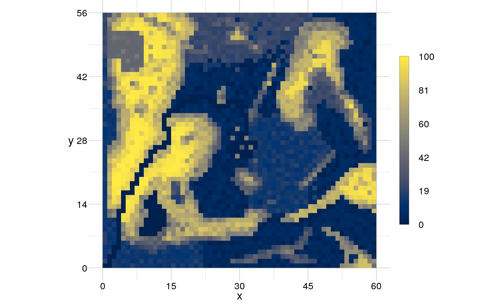

Assign parameters in an rtTheme to create a new theme.
setTheme(from = NULL, title = NULL, box = NULL, xAxis = NULL,
yAxis = NULL, grid = NULL, legend = NULL, geom = NULL,
raster = NULL)
Arguments
| from |
[rtTheme]
an rtTheme object. |
| title |
[named list(.)]
plot = TRUE/FALSE,
fontsize and colour of the title. |
| box |
[named list(.)]
plot = TRUE/FALSE,
linewidth, linetype and colour of the bounding box
(not supported recently). |
| xAxis |
[named list(.)]
plot = TRUE/FALSE, number of
bins and margin of the x-axis,
label [named
list(.)]
plot = TRUE/FALSE, title, fontsize,
colour and rotation of the x-axis label,
ticks
[named list(.)]
plot = TRUE/FALSE, fontsize,
colour and number of digits to which to round the x-axis
ticks. |
| yAxis |
[named list(.)]
plot = TRUE/FALSE, number of
bins and margin of the y-axis,
label [named
list(.)]
plot = TRUE/FALSE, title, fontsize,
colour and rotation of the y-axis label,
ticks
[named list(.)]
plot = TRUE/FALSE, fontsize,
colour and number of digits to which to round the y-axis
ticks. |
| grid |
[named list(.)]
plot = TRUE/FALSE,
colour, linetype and linewidth of the major and minor
grid and whether or not to plot the minor = TRUE/FALSE grid. |
| legend |
[named list(.)]
plot = TRUE/FALSE,
common = TRUE/FALSE scale for several panels, number of bins,
ascending = TRUE/FALSE order of values, position of the
legend and sizeRatio plot and legend,
title [named
list(.)]
plot = TRUE/FALSE, fontsize and colour of
the legend title,
label [named list(.)]
plot =
TRUE/FALSE, fontsize and colour of the legend labels,
ticks [named list(.)]
plot = TRUE/FALSE, fontsize
and colour of the legend ticks,
box [named list(.)]
plot = TRUE/FALSE, linetype, linewidth and
colour of the legend box. |
| geom |
[named list(.)]
line, fill,
linetype, linewidth, pointsize and pointsymbol
of a geom,
scale [named list(.)]
x =
'someParameter' and to = 'someAttribute' to which to scale,
'someParameter' to. |
| raster |
[ named list(.)]
scale = 'someAttribute' and
at least two colours to which to scale 'someAttribute' to. |
Examples
input <- rtData$continuous
(myTheme <- setTheme(title = list(plot = FALSE)))
#> ✖ title
#> ✔ box in black with 3 wide solid lines
#> ✔ xAxis with 4 bins and a margin of 0.05
#> ✔ - label 'x' in black with fontsize 12
#> ✔ - ticks in black with fontsize 10 rounded to 1 digit
#> ✔ yAxis with 4 bins and a margin of 0.05
#> ✔ - label 'y' in black with fontsize 12
#> ✔ - ticks in black with fontsize 10 rounded to 1 digit
#> ✔ grid in grey with 3 wide solid lines
#> ✔ legend positioned at the right with values ordered ascending in 5 bins
#> ✔ - title in black with fontsize 10
#> ✔ - label in black with fontsize 10
#> ✔ - ticks in black with fontsize 10
#> ✔ - box in black with 1 wide solid lines
#> ✔ geom with line-colour scaled to id, 3 wide solid lines and 1 wide points of type 4
#> ✔ raster with colours scaled to id
